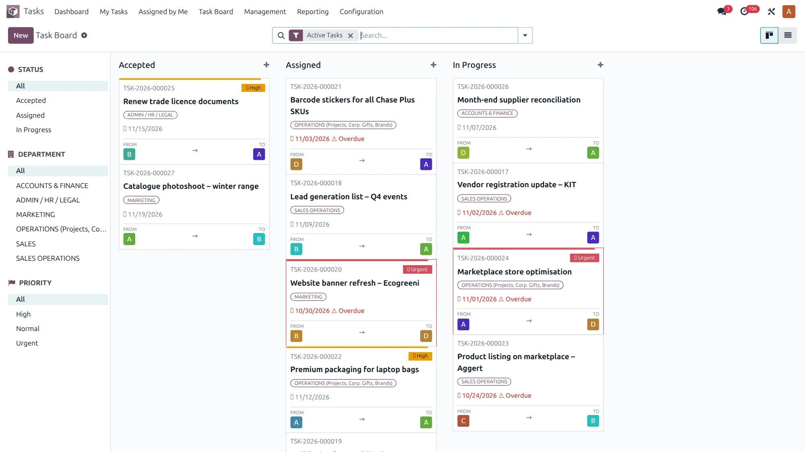
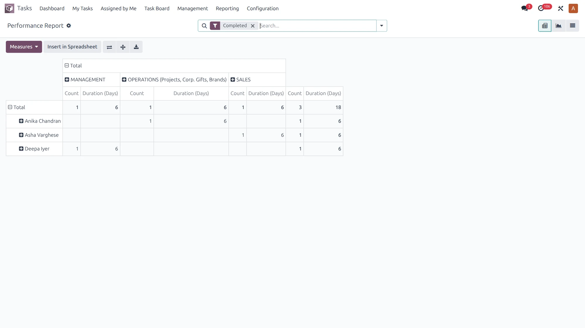

App 09 · Operations
Anyone can assign a task to anyone. The assignee accepts, starts, finishes or rejects it, and managers see performance by department.

Captured from the real module on an anonymised copy of the database. Names are fictional, and confidential figures are blurred. Click any screen to enlarge it.
Task board: Kanban by status with department, priority, deadline and overdue flags.
Performance report by department and assignee.
